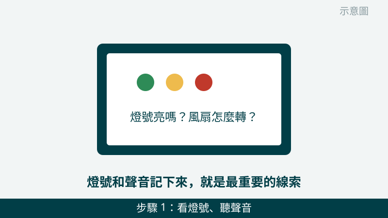
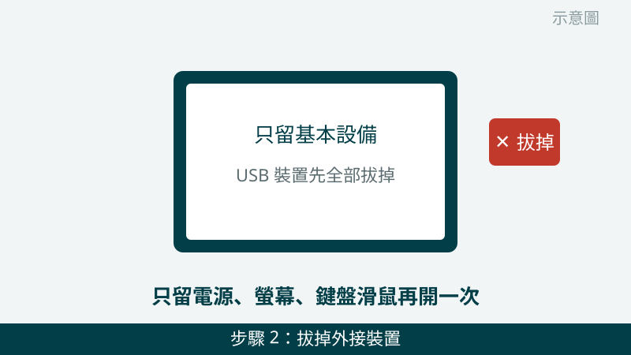
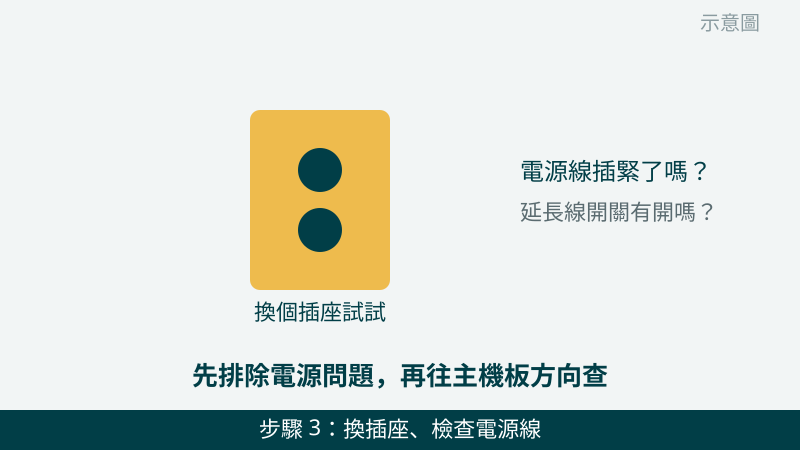
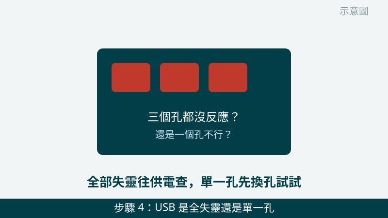
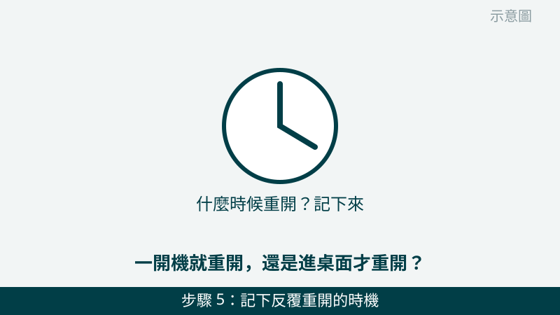
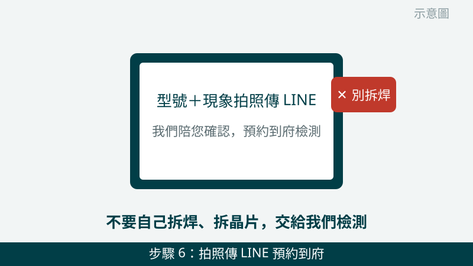

電腦按了電源沒反應、開到一半自己重開、USB 插什麼都沒反應，很多人第一個念頭就是「主機板壞了」。這些症狀很像，但兇手不一定是主機板，電源供應器、記憶體、甚至只是一條鬆掉的電源線，都可能長得一模一樣。
原則：「先看現象、再分邊」。燈號、風扇、嗶聲、重開的時機，都是分清方向的線索；先把現象記下來，再一步一步排除。主機板上的零件請不要自己拆焊、拆晶片，交給檢測來判斷。
現象先傳給我們看
把燈號、風扇狀況和重開的時機拍下來傳 LINE，我們陪您分清是電源、記憶體還是主機板的問題。先免費評估，確認後再預約到府檢測。
台中電腦主機板故障自救檢查清單（由簡到難）
- 1. 先看燈號、聽聲音，把開機現象記下來。按電源鍵之後請留意：主機板上的燈有沒有亮？風扇是轉一下就停、一直轉、還是不轉？有沒有「嗶」聲、幾聲？判斷：完全沒燈沒聲音，比較往電源方向查；有燈有風扇但沒畫面，就要再往記憶體、主機板方向查；把現象記下來，傳 LINE 時一起告訴我們。 這一步卡住了嗎？需要協助，可以傳 LINE 聯繫我們，我們會陪您看、幫您確認。

示意圖（非官方截圖） - 2. 拔掉所有外接裝置，只留最基本的再開機。USB 隨身碟、外接硬碟、讀卡機、印表機線全部拔掉，只留電源、螢幕、鍵盤滑鼠，再開機一次。判斷：拔掉之後能正常開機，再逐一插回，大概就能找到是哪個裝置在卡開機；拔掉還是一樣。 做到這裡不太確定也沒關係，把畫面拍下來傳 LINE 給我們，我們會陪您看、幫您確認。

示意圖（非官方截圖） - 3. 換插座、檢查電源線，排除電源問題。主機後面的電源線請重插一次、確認插緊，延長線開關確認有開，換一個插座再試一次；筆電則換一條確認正常的充電器交叉測試。判斷：換插座、換線就好了，就是供電問題；換了還是一樣，才往主機板方向查。 這一步做完還是不放心嗎？需要協助，可以傳 LINE 聯繫我們，我們會陪您看、幫您確認。

示意圖（非官方截圖） - 4. USB 是全部失靈，還是只有一兩個孔？請逐一試每個 USB 孔：滑鼠、隨身碟換孔、換裝置交叉測試。判斷：只有一兩個孔不行，可能是那個孔本身接觸不良；全部的孔都沒反應，而且重開機也一樣，就要往主機板供電或驅動方向查；先把測試結果記下來，傳 LINE 時一起告訴我們。 這一步卡住了嗎？需要協助，可以傳 LINE 聯繫我們，我們會陪您看、幫您確認。

示意圖（非官方截圖） - 5. 注意反覆重開發生的時機。請留意重開是「一按電源就重開」「進桌面才重開」還是「打遊戲、剪影片這種高負載才重開」。判斷：一開機就重開，比較往電源、主機板供電方向查；高負載才重開，過熱和電源瓦數也要一起看；把時機記下來，判斷方向會準很多。 做到這裡不太確定也沒關係，把畫面拍下來傳 LINE 給我們，我們會陪您看、幫您確認。

示意圖（非官方截圖） - 6. 記下型號、現象拍照傳 LINE，預約到府檢測。請把主機或筆電的型號、燈號、風扇和重開時機拍下來傳 LINE 給我們，我們陪您分清是電源、記憶體還是主機板的問題，再報一個總價給您確認，您確認後再預約到府檢測。判斷：分得越清楚，檢測越快；分不清也沒關係，需要協助，可以傳 LINE 聯繫我們，我們會陪您看、幫您確認。 這一步做完還是不放心嗎？需要協助，可以傳 LINE 聯繫我們，我們會陪您看、幫您確認。

示意圖（非官方截圖）
出現這些情況，就別再自己試了
- 聞到燒焦味、看到冒煙，或電源供應器有異音、火花——請馬上斷電，不要再開機
- 想自己拆焊主機板、拆晶片、換電容——請不要動手，主機板維修需要專業設備，拆壞了反而更難處理
- 筆電底殼或觸控板鼓起來——這是電池膨脹，不要再充電使用
- 反覆開機都自動斷電，還伴隨「喀喀」異音，請先停手保資料
如果照 6 步走還是分不清是哪一邊出問題，也沒關係，需要協助，可以傳 LINE 聯繫我們，我們會陪您看、幫您確認。檢測會把電源、記憶體、主機板一起交叉比對，找出真正的問題再報一個總價給您確認，您確認後再決定。
常見問題
台中電腦主機板故障，是不是一定要整片換掉？
不一定。開不了機、反覆重開、USB 失靈，可能是主機板、電源供應器或記憶體其中一邊出問題，表現很像，一定要檢測分清才能確定。我們會先看您拍的燈號和現象，報一個總價給您確認，您確認後再決定要不要修。
USB 全部失靈，就是主機板壞了嗎？
不一定。驅動程式、供電不足或設定跑掉也可能讓 USB 全部沒反應。請先換孔、拔掉外接裝置重開機交叉測試；如果全部的孔都沒反應、而且重開機也一樣，再拍照傳 LINE 給我們，我們會陪您看、幫您確認。
電腦反覆重開，是主機板還是電源問題？
兩者都可能，要看發生的時機：一開機就重開、風扇轉一下就停，比較往電源和主機板供電方向查；進桌面、用一陣子才重開，過熱和驅動也要一起看。把重開的時機和燈號拍下來傳 LINE，我們會陪您分清方向。